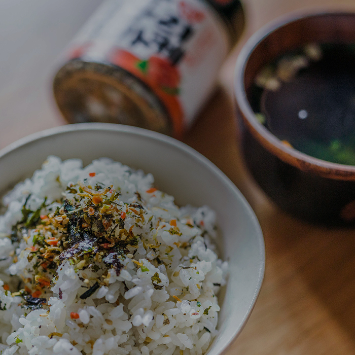

항상 고객 여러분께 최상의 상품을 제공하기 위해
노력을 다하고 있습니다.
Products
푸른정식품은 복합조미식품, 해조류, 건어물 등 바다식품을 제조유통 및 수출하는 전문 업체입니다.

자연의 맛 그대로
첨가물 없이 건강하게 만들어 고소한 맛이 가득하며
집에서도 손쉽게 요리가 가능한 오리지널 후리카케입니다.
푸른정후리카케 야채맛
푸른정 후리카케 해물맛
푸른정 후리카케 명란맛
푸른정 후리카케 야채후레이크
About Us
건강과 맛을 최우선으로 하는 푸른정식품은 고객의 건강과 바이어의 가치를 연결합니다.
More view바탕으로 한 빠른 의사소통
고객의 행복과 건강을 생각하며 에너지가
넘치고 생동감 있는 기업이 되겠습니다.
믿을 수 있는 먹거리
누구나 즐길 수 있는 먹거리를
제공하기 위해 노력하고 있습니다.
수출 전문 업체
영양 염류가 풀부한 바다에서 얻은
최상의 원료로 제품을 생산하고 있습니다.
건강과 맛을 최우선으로 누구나 즐길 수 있는 먹거리
푸른정
PUREUNJEONG Food
건강과 맛을 최우선으로 누구나 즐길 수 있는 먹거리를 소비자와 바이어에게 그 이상의 가치를 선사하는 데에 앞장섭니다.